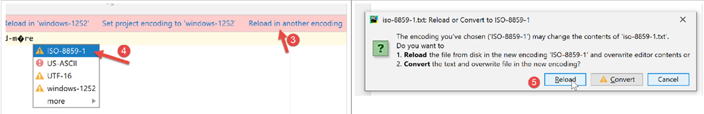
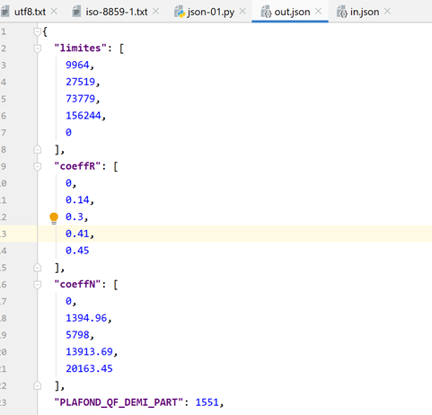

7. Os ficheiros de texto

7.1. Script [fic_01]: leitura/gravação de um ficheiro de texto
O script seguinte ilustra um exemplo de utilização de ficheiros de texto:
# importações
import sys
# criação e posterior processamento sequencial de um ficheiro de texto
# este é um conjunto de linhas com o formato login:pwd:uid:gid:infos:dir:shell
# cada linha é inserida num dicionário com o formato login => uid:gid:infos:dir:shell
# --------------------------------------------------------------------------
def affiche_infos(dico: dict, clé: str):
# exibe o valor associado à chave no dicionário «dico», caso exista
if clé in dico.keys():
# é apresentado o valor associado à chave
print(f"{clé} : {dico[clé]}")
else:
# a chave não faz parte do dicionário «dico»
print(f"la clé [{clé}] n'existe pas")
# main -----------------------------------------------
# define-se o nome do ficheiro
FILE_NAME = "./data/infos.txt"
# criação e preenchimento do ficheiro de texto
fic = None
try:
# abertura do ficheiro para escrita (w=write)
fic = open(FILE_NAME, "w")
# gera-se um conteúdo arbitrário
for i in range(1, 101):
# uma linha
ligne = f"login{i}:pwd{i}:uid{i}:gid{i}:infos{i}:dir{i}:shell{i}"
# é gravada no ficheiro de texto
fic.write(f"{ligne}\n")
except IOError as erreur:
print(f"Erreur d'exploitation du fichier {FILE_NAME} : {erreur}")
sys.exit()
finally:
# fecha-se o ficheiro, caso tenha sido aberto
if fic:
fic.close()
# abre-se o ficheiro em modo de leitura
fic = None
try:
# abertura do ficheiro em modo de leitura
fic = open(FILE_NAME, "r")
# dicionário vazio inicialmente
dico = {}
# cada linha é inserida no dicionário [dico] na forma login => uid:gid:infos:dir:shell
# leitura da primeira linha, removendo os espaços no início e no fim da linha
ligne = fic.readline().strip()
# desde que a linha não esteja vazia
while ligne != '':
# colocamos a linha numa tabela
infos = ligne.split(":")
# recuperamos o login
login = infos[0]
# ignora-se a palavra-passe
infos[0:2] = []
# cria-se uma entrada no dicionário
dico[login] = infos
# ler a linha seguinte
ligne = fic.readline().strip()
except IOError as erreur:
print(f"Erreur d'exploitation du fichier {FILE_NAME} : {erreur}")
sys.exit()
finally:
# fecha-se o ficheiro, caso tenha sido aberto
if fic:
fic.close()
# utilização do dicionário «dico»
affiche_infos(dico, "login10")
affiche_infos(dico, "X")
Notas:
- linha 28: abertura do ficheiro para escrita (w=write). Se o ficheiro já existir, será substituído;
- linhas 30-34: são geradas 100 linhas no ficheiro de texto;
- linha 34: para escrever uma linha no ficheiro de texto. O método [write] não adiciona o caractere de fim de linha. Por isso, é necessário incluir esse caractere no texto escrito;
- linhas 35-37: gestão de uma eventual exceção;
- linha 37: interrupção da execução do script (no entanto, após a execução da cláusula finally);
- linhas 38-41: em todos os casos, haja ou não erro, fecha-se o ficheiro se este estiver aberto;
- linha 47: abertura do ficheiro para leitura (r=read);
- linha 49: definição de um dicionário vazio;
- linha 52: o método [readline] lê uma linha de texto, incluindo o caractere de fim de linha. O método [strip] remove os «espaços» no início e no fim da cadeia. Por «espaço», entenda-se caracteres brancos, marca de fim de linha, salto de página, tabulação e alguns outros. Assim, neste caso, o [ligne] não incluirá os caracteres de fim de linha do [\r\n] (Windows) ou do [\n] (Unix);
- linha 54: o ficheiro é processado até se encontrar uma linha vazia;
- linhas 54-64: o ficheiro de texto é transferido para o dicionário [dico]. A chave é o campo [login], o valor são os campos [uid:gid:infos:dir:shell];
- linhas 65-67: tratamento de uma eventual exceção;
- linhas 68-71: fecho do ficheiro em todos os casos, haja ou não erro;
- linhas 74-75: utilização do dicionário [dico];
O ficheiro [data/infos.txt]:
Resultados no ecrã:
C:\Data\st-2020\dev\python\cours-2020\python3-flask-2020\venv\Scripts\python.exe C:/Data/st-2020/dev/python/cours-2020/python3-flask-2020/fichiers/fic_01.py
login10 : ['uid10', 'gid10', 'infos10', 'dir10', 'shell10']
la clé [X] n'existe pas
Process finished with exit code 0
7.2. Script [fic_02]: gerir ficheiros de texto codificados em UTF-8
No restante deste documento, iremos gerir ficheiros de texto codificados exclusivamente em UTF-8. Em primeiro lugar, iremos configurar o PyCharm:

- em [5-6]: selecionar a codificação UTF-8 para os ficheiros do projeto;
Para criar um ficheiro codificado em UTF-8, pode-se proceder da seguinte forma (fic-02):
# importações
import codecs
# gravação em UTF-8 num ficheiro de texto
# não se tratam as exceções
file=codecs.open("./data/utf8.txt","w","utf8")
file.write("Hélène est partie à Bâle pendant l'été chez sa grand-mère")
file.close()
Notas
- linha 2: para gerir a codificação dos ficheiros, importa-se o módulo [codecs];
- linha 6: o método [codecs.open] é utilizado tal como a função clássica [open]. No entanto, é possível especificar a codificação pretendida (criação) ou existente (leitura). Após a abertura, o objeto [file] obtido na linha 6 é utilizado como um ficheiro clássico;
- linha 7: foram utilizados caracteres acentuados que, na maioria das vezes, têm representações diferentes consoante o código de caracteres utilizado;
Resultados
Ao abrir o ficheiro [data/utf8.txt] obtido (ver linha 6), obtém-se o seguinte resultado:

7.3. Script [fic_03]: gerir ficheiros de texto codificados em ISO-8859-1
O script [fic_03] faz o mesmo que o script [fic_02], mas codifica o ficheiro de texto em ISO-8859-1. Pretendemos mostrar a diferença entre os ficheiros obtidos:
# importações
import codecs
# gravação em ISO-8859-1 num ficheiro de texto
# não são geridas as exceções
file=codecs.open("./data/iso-8859-1.txt","w","iso-8859-1")
file.write("Hélène est partie à Bâle pendant l'été chez sa grand-mère")
file.close()
Quando abrimos o ficheiro [data/iso-8859-1] criado na linha 6, obtemos o seguinte resultado:

Como configurámos o projeto para funcionar com ficheiros UTF-8, o PyCharm tentou abrir o ficheiro [iso-8859-1.txt] como UTF-8. Consegue detetar que o ficheiro [1] não é o UTF-8. Sugere então que o ficheiro seja recarregado com outra codificação:

- em [3-5]: o ficheiro é recarregado utilizando uma codificação ISO-8859-1;

- para [6], o mesmo ficheiro, mas apresentado com uma codificação diferente;
Se voltarmos às definições do projeto:

- vemos que, no [6-7], o PyCharm registou que o ficheiro [iso-8859-1.txt] deveria ser aberto com a codificação ISO-8859-1. Trata-se, portanto, de uma exceção à regra [5];
7.4. Script [json_01]: gestão de um ficheiro jSON
JSON significa «JavaScript Object Notation». Tal como o próprio nome indica, trata-se de um modo de representação textual dos objetos da linguagem JavaScript. Iremos utilizá-lo aqui com objetos Python.
O ficheiro jSON, gerido por [data/in.json], terá o seguinte aspeto:

- No ficheiro [2], verifica-se que o conteúdo textual do ficheiro [in.json] poderia representar um dicionário Python. O PyCharm formatou (Ctrl-Alt-L) este texto, mas, mesmo que estivesse numa única linha, isso não alteraria nada. A forma do texto não tem qualquer importância, desde que represente sintaticamente um objeto Python;
O script [json-01] mostra como explorar este ficheiro:
# importações
import codecs
import json
import sys
# leitura/gravação de um ficheiro jSON
inFile=None
outFile=None
try:
# abertura do ficheiro jSON em modo de leitura
inFile = codecs.open("./data/in.json", "r", "utf8")
# transferência do conteúdo para um dicionário
data = json.load(inFile)
# exibição dos dados lidos
print(f"data={data}, type(data)={type(data)}")
limites = data['limites']
print(f"limites={limites}, type(limites)={type(limites)}")
print(f"limites[1]={limites[1]}, type(limites[1])={type(limites[1])}")
# transferência do dicionário [data] para um ficheiro JSON
outFile = codecs.open("./data/out.json", "w", "utf8")
json.dump(data, outFile)
except BaseException as erreur:
# exibe o erro e sai
print(f"L'erreur suivante s'est produite : {erreur}")
sys.exit()
finally:
# fecho dos ficheiros, caso estejam abertos
if inFile:
inFile.close()
if outFile:
outFile.close()
Notas
- linha 3: para lidar com o JSON, importa-se o módulo [json];
- linha 11: vamos trabalhar com ficheiros jSON codificados em UTF-8. Aqui, abrimos o ficheiro [data/in.json] com o módulo [codecs];
- linha 13: o método [json.load] lê o conteúdo do ficheiro jSON e coloca-o na variável [data]. O tipo desta variável será, neste caso, um dicionário;
- linhas 15-18: para demonstrar que obtivemos efetivamente um dicionário Python, exibimos alguns dos seus elementos;
- linhas 20-21: realizamos a operação inversa: o dicionário [data] é gravado num ficheiro com o nome UTF-8 através do método [json.dump];
- linhas 22-25: tratamento de uma eventual exceção;
- linhas 26-31: em todos os casos, haja ou não erro, fecham-se os ficheiros que possam ter sido abertos;
Resultados
C:\Data\st-2020\dev\python\cours-2020\python3-flask-2020\venv\Scripts\python.exe C:/Data/st-2020/dev/python/cours-2020/python3-flask-2020/fichiers/json_01.py
data={'limites': [9964, 27519, 73779, 156244, 0], 'coeffR': [0, 0.14, 0.3, 0.41, 0.45], 'coeffN': [0, 1394.96, 5798, 13913.69, 20163.45], 'PLAFOND_QF_DEMI_PART': 1551, 'PLAFOND_REVENUS_CELIBATAIRE_POUR_REDUCTION': 21037, 'PLAFOND_REVENUS_COUPLE_POUR_REDUCTION': 42074, 'VALEUR_REDUC_DEMI_PART': 3797, 'PLAFOND_DECOTE_CELIBATAIRE': 1196, 'PLAFOND_DECOTE_COUPLE': 1970, 'PLAFOND_IMPOT_COUPLE_POUR_DECOTE': 2627, 'PLAFOND_IMPOT_CELIBATAIRE_POUR_DECOTE': 1595, 'ABATTEMENT_DIXPOURCENT_MAX': 12502, 'ABATTEMENT_DIXPOURCENT_MIN': 437}, type(data)=<class 'dict'>
limites=[9964, 27519, 73779, 156244, 0], type(limites)=<class 'list'>
limites[1]=27519, type(limites[1])=<class 'int'>
Process finished with exit code 0
- as linhas 2-4 mostram que o dicionário presente no ficheiro jSON foi recuperado corretamente;
Agora, vejamos o conteúdo do ficheiro [data/out.json]:

O texto do ficheiro está numa única linha. No entanto, o PyCharm reconhece os ficheiros jSON e é possível formatá-los, tal como os ficheiros Python e outros, através de Ctrl-Alt-L. Obtém-se então o seguinte:

7.5. Script [json_02]: gestão de ficheiros jSON codificados em UTF-8
Um ficheiro jSON codificado em UTF-8 pode assumir duas formas:
# importações
import codecs
import json
import sys
# dicionário
data = {'marié': 'oui', 'impôt': 1340}
# gravação de um ficheiro jSON
out_file1 = None
out_file2 = None
try:
# transferência do dicionário [data] para um ficheiro JSON
out_file1 = codecs.open("./data/out1.json", "w", "utf8")
json.dump(data, out_file1, ensure_ascii=True)
# transferência do dicionário [data] para um ficheiro JSON
out_file2 = codecs.open("./data/out2.json", "w", "utf8")
json.dump(data, out_file2, ensure_ascii=False)
except BaseException as erreur:
# exibe-se o erro e sai-se
print(f"L'erreur suivante s'est produite : {erreur}")
sys.exit()
finally:
# fecho dos ficheiros, caso estejam abertos
if out_file1:
out_file1.close()
if out_file2:
out_file2.close()
…
- Neste script, o dicionário [data] (linha 7) é gravado em dois ficheiros jSON (linhas 14 e 17);
- linhas 14 e 17: em ambos os casos, cria-se um ficheiro de texto UTF-8;
- linhas 15: ao gravar o dicionário, utiliza-se o parâmetro denominado [ensure_ascii=True];
- linhas 18: ao escrever o dicionário, utiliza-se o parâmetro denominado [ensure_ascii=False];
Eis os dois ficheiros obtidos:

- no ficheiro [out1.json], os caracteres acentuados foram substituídos por uma série de caracteres que representam o seu código UTF-8. Por vezes, diz-se que foram «escapados». Tecnicamente, no ficheiro binário [out1.json], encontram-se, para o caractere «é» de [marié], sucessivamente os códigos binários UTF-8 dos 6 caracteres [\u00e9];
- no ficheiro [out2.json], os caracteres acentuados foram mantidos tal como estavam. Isto significa que, no ficheiro binário de [out2.json], esses caracteres são representados pelo seu código binário UTF-8 (apenas 1 código UTF-8, em vez de 6 para out1). Para o caractere «é» de [marié], encontrar-se-á assim o código binário [00e9] em 4 octetos;
- é o valor do parâmetro [ensure_ascii] do método [json.dump] que determina o formato utilizado;
Algumas aplicações utilizam o UTF-8 «escapado» para os seus ficheiros jSON. Nesse caso, deve ser utilizado o valor [ensure_ascii=True]. Este valor é, de facto, o valor por predefinição. Portanto, se não se utilizar o parâmetro [ensure_ascii], trabalhar-se-á com ficheiros jSON e UTF-8 com caracteres de escape.
O script prossegue da seguinte forma:
# importações
import codecs
import json
import sys
# dicionário
data = {'marié': 'oui', 'impôt': 1340}
…
# revisão dos ficheiros jSON
in_file1 = None
in_file2 = None
try:
# transferência do ficheiro jSON 1 para um dicionário
in_file1 = codecs.open("./data/out1.json", "r", "utf8")
dico1 = json.load(in_file1)
# visualização
print(f"dico1={dico1}")
# transferência do ficheiro jSON 2 para um dicionário
in_file2 = codecs.open("./data/out2.json", "r", "utf8")
dico2 = json.load(in_file2)
# exibição
print(f"dico2={dico2}")
except BaseException as erreur:
# exibe o erro e sai
print(f"L'erreur suivante s'est produite : {erreur}")
sys.exit()
finally:
# fecho dos ficheiros, caso estejam abertos
if in_file1:
in_file1.close()
if in_file2:
in_file2.close()
Notas
- linhas 11-34: leitura dos dois ficheiros [out1.json, out2.json] e exibição do dicionário lido em cada um dos casos;
Resultados
Surpreendentemente, verifica-se que não foi necessário especificar à função [json.load] (linhas 17, 22) o tipo de codificação (com ou sem caracteres de escape) da cadeia jSON a ser lida. Em ambos os casos, obtém-se o dicionário correto.